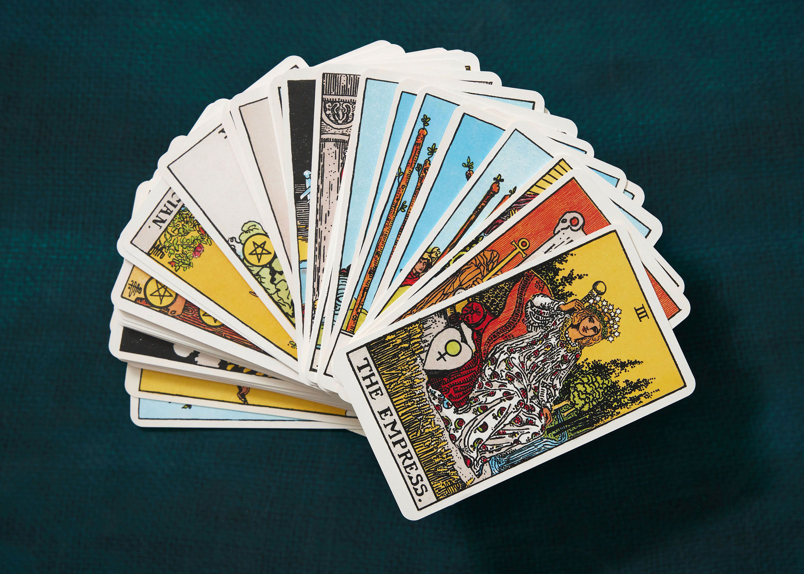
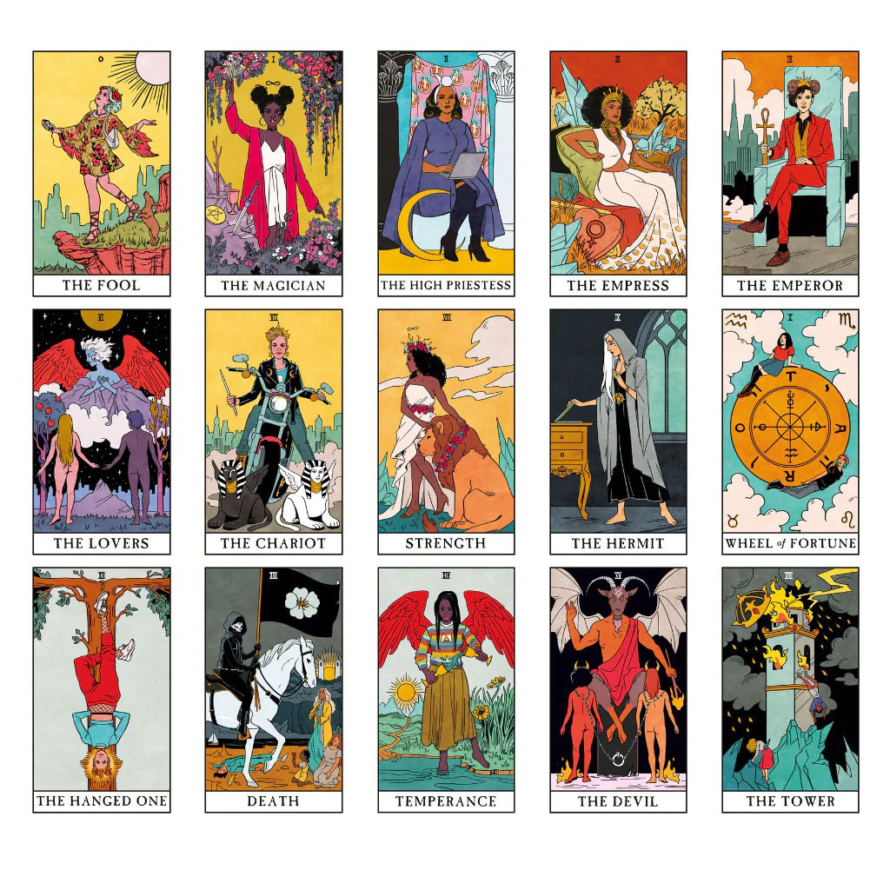
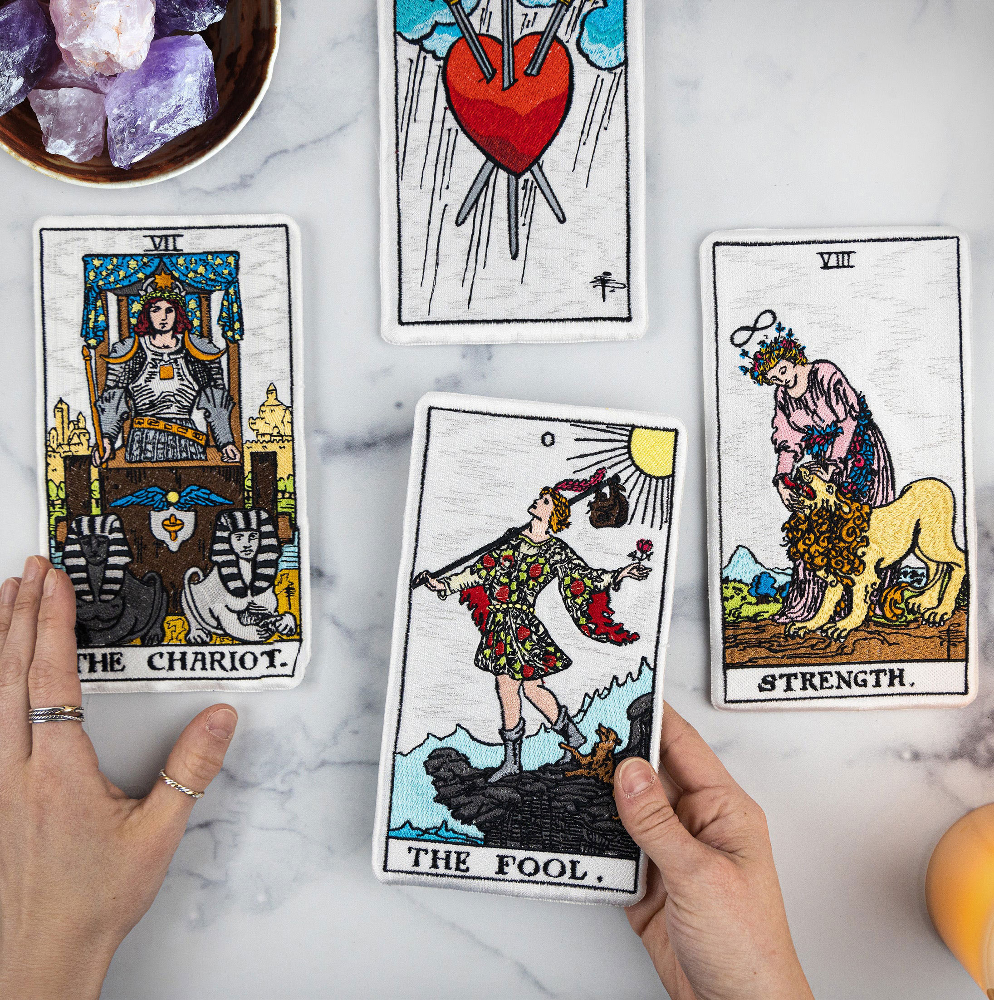

Why Read Tarot
Life is full of uncertainties, especially when you're transitioning from school to adult life. Whether you're navigating relationships, career choices, or figuring out who you are, tarot offers a unique way to explore these questions. Contrary to the misconception that tarot is about predicting the future, it's really about self-reflection and gaining clarity. Each card in a tarot deck represents a concept or challenge that can guide you in understanding your own thoughts and emotions.
For young adults, especially those just starting out on their own path, tarot can be an empowering tool. It helps you tap into your intuition and reflect on the situations around you. In a world where so much is uncertain, tarot provides a space to pause and consider what you really want, how you feel about your choices, and where you're headed. The insights you gain are not just mystical – they often bring practical advice that you can apply to everyday life.
One of the biggest reasons to read tarot is that it encourages self-awareness. If you're figuring out your sense of self, or struggling with confidence, tarot readings can help you explore parts of your personality you may not have been conscious of. For men and male presenting/identifying people, in particular, tarot can offer a safe space to engage with emotions and inner thoughts, which are often neglected. Tarot is gender-neutral and personal to each reader, but it can be particularly valuable for men in learning to embrace vulnerability. For women and female presenting/identifying people, tarot can be a powerful tool for tuning into intuition and self-expression. It provides a space to explore and connect with the inner parts of yourself that may sometimes feel overlooked or stifled by societal pressures. While tarot is gender-neutral and personal to each reader, it can be particularly valuable for women in embracing their inner strength and trusting their instincts.
Beyond self-reflection, tarot fosters a deeper connection to the world around you. It teaches you to see patterns in your life, notice synchronicities that might otherwise go unnoticed, and trust your own inner voice. This practice encourages you to explore the symbols and messages within the cards, allowing you to gain insights that resonate personally. Instead of looking for external validation from friends or society, tarot empowers you to find answers within yourself. This process is crucial during times when you may feel disconnected or overwhelmed by the expectations of others. Ultimately, tarot serves as a guiding light, bringing you back to your own sense of truth and helping you navigate the complexities of life.
Ultimately, tarot is about growth. It's not about having all the answers, but about asking the right questions and giving yourself the freedom to explore different paths. Whether you're searching for direction, clarity, or just want a new way to connect with yourself, tarot can be a companion on your journey through this transformative phase of life.